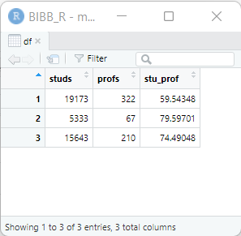
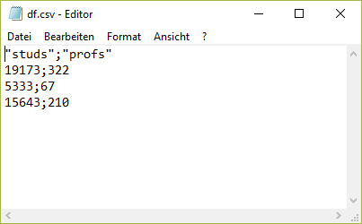
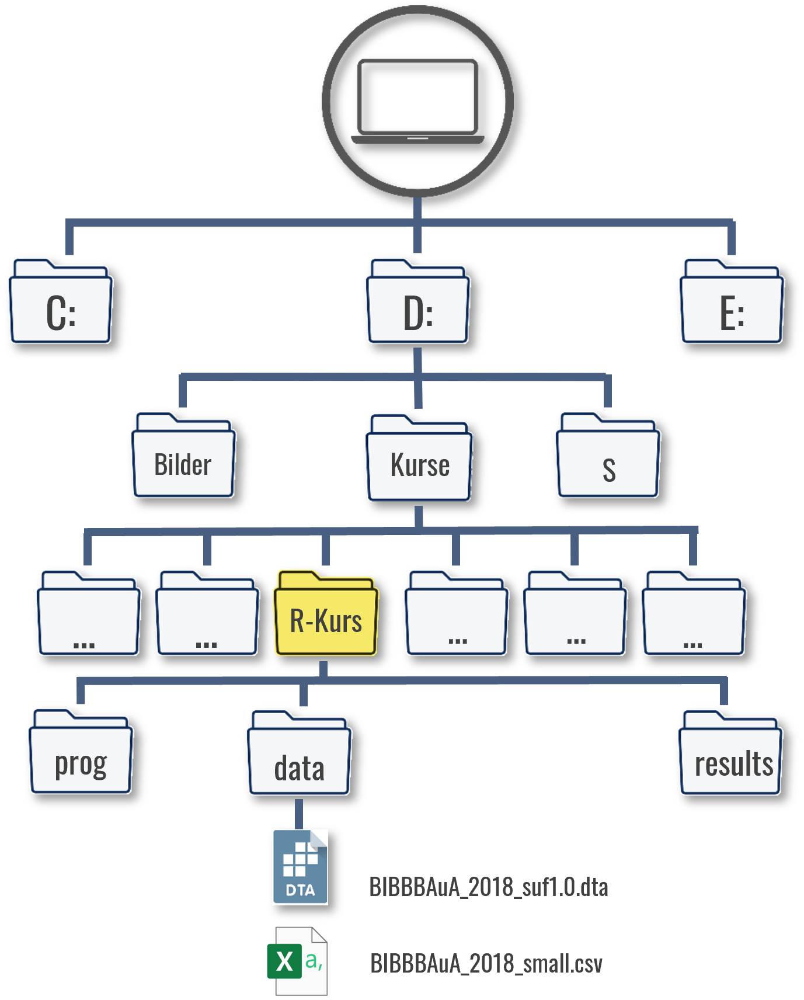
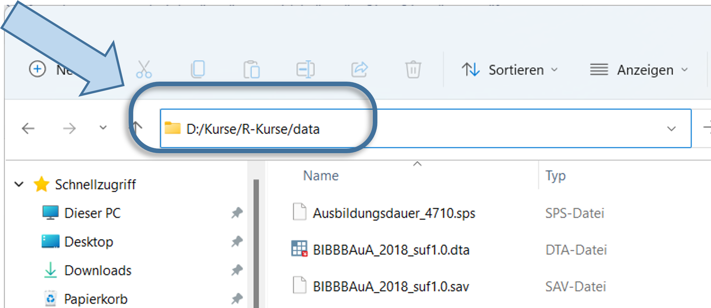
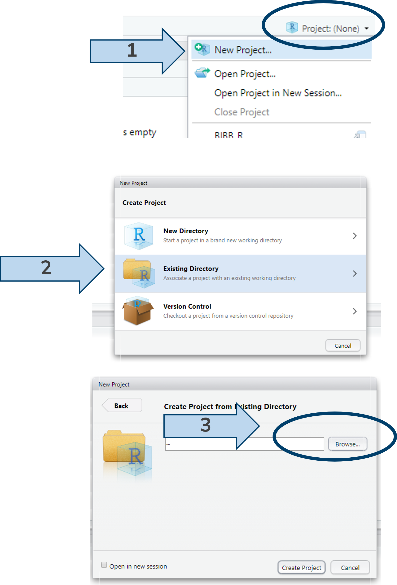
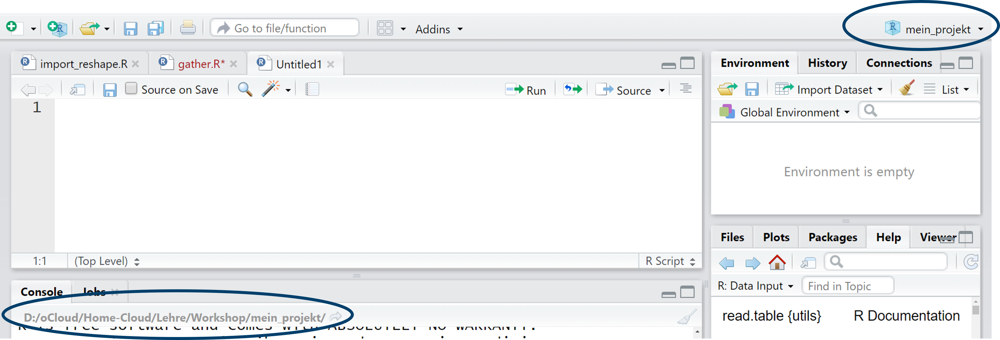

studs <- c(19173,5333,15643) # Studierendenzahlen unter "studs" ablegen
profs <- c(322,67,210) # Prof-Zahlen unter "profs" ablegen
df <- data.frame(studs, profs)2 Arbeiten mit Datensätzen in R
In der ersten Session haben wir einige Schritte mit der Taschenrechnerfunktion in R unternommen. Die wirkliche Stärke von R ist aber die Verarbeitung von Daten - los gehts.
Im vorherigen Kapitel haben wir die Studierendenzahlen der Uni Bremen (19173), Uni Vechta (5333) und Uni Oldenburg (15643) zusammen unter studs abgelegt und mit den in profs abgelegten Professurenzahlen ins Verhältnis gesetzt. Das funktioniert soweit gut, allerdings ist es übersichtlicher, zusammengehörige Werte auch zusammen ablegen. Dafür gibt es in R data.frame. Wir können dazu die beiden Objekte in einem Datensatz ablegen, indem wir sie in data.frame eintragen und das neue Objekt unter df ablegen. Wenn wir df aufrufen sehen wir, dass die Werte zeilenweise zusammengefügt wurden:
df <- data.frame(studs = c(19173,5333,15643),
profs = c(322,67,210),
gegr = c(1971,1830,1973)) # ohne zwischen-Objekte
df # zeigt den kompletten Datensatz an studs profs gegr
1 19173 322 1971
2 5333 67 1830
3 15643 210 1973In der ersten Zeile stehen also die Werte der Uni Bremen, in der zweiten Zeile die Werte der Uni Vechta usw. Die Werte können wir dann mit datensatzname$variablenname aufrufen. So können wir die Spalte profs anzeigen lassen:
df$profs [1] 322 67 210Mit colnames() können wir die Variablen-/Spaltennamen des Datensatzes anzeigen lassen, zudem können wir mit nrow und ncol die Zahl der Zeilen bzw. Spalten aufrufen:
colnames(df) ## Variablen-/Spaltennamen anzeigen[1] "studs" "profs" "gegr" ncol(df) ## Anzahl der Spalten/Variablen[1] 3nrow(df) ## Anzahl der Zeilen/Fälle[1] 3Neue zusätzliche Variablen können durch datensatzname$neuevariable in den Datensatz eingefügt werden:
df$stu_prof <- df$studs/df$profs
## df hat also nun eine Spalte mehr:
ncol(df) [1] 4df studs profs gegr stu_prof
1 19173 322 1971 59.54348
2 5333 67 1830 79.59701
3 15643 210 1973 74.49048Wir können auch ein oder mehrere Wörter in einer Variable ablegen, jedoch müssen Buchstaben/Wörter immer in "" gesetzt werden.
df$uni <- c("Uni Bremen","Uni Vechta", "Uni Oldenburg")
df studs profs gegr stu_prof uni
1 19173 322 1971 59.54348 Uni Bremen
2 5333 67 1830 79.59701 Uni Vechta
3 15643 210 1973 74.49048 Uni OldenburgMit View(df) öffnet sich zudem ein neues Fenster, in dem wir den gesamten Datensatz ansehen können:
View(df)
2.1 Variablentypen
Damit haben wir bisher zwei Variablentypen kennen gelernt: numeric (enthält Zahlen) und character (enthält Text oder Zahlen, die als Text verstanden werden sollen). Darüber hinaus gibt es noch weitere Typen, die besprechen wir wenn sie nötig sind, zB. gibt es factor-Variablen, die eine vorgegebene Sortierung und Werteuniversum umfassen oder logische Variablen. Vorerst fokussieren wir uns auf character und numeric Variablen. Mit class() kann die Art der Variable untersucht werden oder mit is.numeric() bzw. is.character() können wir abfragen ob eine Variable diesem Typ entspricht:
class(df$profs)[1] "numeric"class(df$uni)[1] "character"is.numeric(df$profs)[1] TRUEis.character(df$profs)[1] FALSEMit as.character() bzw. as.numeric() können wir einen Typenwechsel erzwingen:
as.character(df$profs) ## die "" zeigen an, dass die Variable als character definiert ist[1] "322" "67" "210"Das ändert erstmal nichts an der Ausgangsvariable df$profs:
class(df$profs)[1] "numeric"Wenn wir diese Umwandlung für df$profs behalten wollen, dann müssen wir die Variable überschreiben:
df$profs <- as.character(df$profs)
df$profs [1] "322" "67" "210"class(df$profs)[1] "character"Mit character-Variablen kann nicht gerechnet werden, auch wenn sie Zahlen enthalten:
df$profs / 2 Error in df$profs/2: nicht-numerisches Argument für binären OperatorWir können aber natürlich df$profs spontan mit as.numeric umwandeln, um mit den Zahlenwerten zu rechnen:
as.numeric(df$profs)[1] 322 67 210as.numeric(df$profs) / 2[1] 161.0 33.5 105.0Wenn wir Textvariablen in numerische Variablen umwandeln, bekommen wir NAs ausgegeben. NA steht in R für fehlende Werte:
as.numeric(df$uni)Warning: NAs durch Umwandlung erzeugt[1] NA NA NAR weiß (verständlicherweise) also nicht, wie die Uni-Namen in Zahlen umgewandelt werden sollen.
Important
Nicht selten ist ein Problem bei einer Berechnung auf den falschen Variablentypen zurückzuführen.
2.2 Zeilen oder Spalten auswählen
Wir können Einträge aus einem Datensatz mit [ ] auswählen:
df[1,1] # erste Zeile, erste Spalte[1] 19173df[1,] # erste Zeile, alle Spalten studs profs gegr stu_prof uni
1 19173 322 1971 59.54348 Uni Bremendf[,1] # alle Zeilen, erste Spalte (entspricht hier df$studs)[1] 19173 5333 15643df[,"studs"] # alle Zeilen, Spalte mit Namen studs -> achtung: ""[1] 19173 5333 15643Natürlich können wir auch mehrere Zeilen oder Spalten auswählen. Dafür müssen wir wieder auf c( ) zurückgreifen:
df[c(1,2),] ## 1. & 2. Zeile, alle Spalten
df[,c(1,3)] ## alle Zeilen, 1. & 3. Spalte (entspricht df$studs & df$stu_prof)
df[,c("studs","uni")] ## alle Zeilen, Spalten mit Namen studs und uniIn diese eckigen Klammern können wir auch Bedingungen schreiben, um so Auswahlen aus df zu treffen.
df # vollständiger Datensatz studs profs gegr stu_prof uni
1 19173 322 1971 59.54348 Uni Bremen
2 5333 67 1830 79.59701 Uni Vechta
3 15643 210 1973 74.49048 Uni Oldenburgdf[df$uni == "Uni Oldenburg", ] # Zeilen in denen uni gleich "Uni Oldenburg", alle Spalten studs profs gegr stu_prof uni
3 15643 210 1973 74.49048 Uni Oldenburgdf$studs[df$uni == "Uni Oldenburg" ] # Nur Studi-Zahl nachsehen: kein Komma [1] 15643Das funktioniert soweit wie gewünscht und wir können das Ganze jetzt erweitern:
df[df$uni == "Uni Oldenburg" & df$studs > 10000, ] # & bedeutet UND2.3 Einfacher filtern und auswählen mit {dplyr}
Allerdings wird der Befehl hier schon sehr lang: wir müssen drei Mal df aufrufen und außerdem immer darauf achten, das Komma an der richtigen Stelle zu setzen. Eine kürzere und komfortablere Variante ist der Befehl filter() aus dem Paket {dplyr}1:
install.packages("dplyr") # nur einmal nötiglibrary(dplyr) # nach einmaligem install.packages("dplyr")
filter(df,uni == "Uni Oldenburg", studs > 1000) studs profs gegr stu_prof uni
1 15643 210 1973 74.49048 Uni OldenburgWir können die Ausgaben dann auch in einem neuen data.frame-Objekt ablegen:
ueber_10tsd <- filter(df, studs > 10000)
ueber_10tsd studs profs gegr stu_prof uni
1 19173 322 1971 59.54348 Uni Bremen
2 15643 210 1973 74.49048 Uni Oldenburgclass(ueber_10tsd)[1] "data.frame"Weitere Operatoren zur Auswahl von Zeilen:
<=und>=: kleiner gleich/ größer gleich|oder:filter(df,studs > 10000 | prof < 200)\(\Rightarrow\) mehr als 10.000 Studierende oder weniger als 200 Professurenbetween()für Wertebereiche:filter(df,between(studs,10000,20000)\(\Rightarrow\) zwischen 10.000 und 20.000 Studierenden oder (jeweils eingeschlossen)%in%“eines von”:filter(df, gegr %in% c(1971,1973,2004))\(\Rightarrow\) gegründet 1971 oder 1973 oder 2004:für Zahlenreihen:filter(df, gegr %in% c(1971:1973))\(\Rightarrow\) gegründet 1971 bis 1973
2.4 Variablentypen Teil 2: logical
Diese Auswahl basiert auf einem dritten Variablentyp: ‘logical’, also logische Werte mit TRUE oder FALSE. Wenn wir mit ==, > oder < eine Bedingung formulieren, dann erstellen wir eigentlich einen logischen Vektor in der selben Länge wie die Daten:
df$studs > 10000 # ist die Studi-Zahl größer 10000?[1] TRUE FALSE TRUEdf$more10k <- df$studs > 10000 # ist die Studi-Zahl größer 10000?df studs profs gegr stu_prof uni more10k
1 19173 322 1971 59.54348 Uni Bremen TRUE
2 5333 67 1830 79.59701 Uni Vechta FALSE
3 15643 210 1973 74.49048 Uni Oldenburg TRUEWir könnten dann auch auf Basis dieser Variable filtern:
filter(df,more10k) studs profs gegr stu_prof uni more10k
1 19173 322 1971 59.54348 Uni Bremen TRUE
2 15643 210 1973 74.49048 Uni Oldenburg TRUE2.4.1 Übung
2.5 Datensätze einlesen
In der Regel werden wir aber Datensätze verwenden, deren Werte bereits in einer Datei gespeichert sind und die wir lediglich einlesen müssen. Dafür gibt es unzählige Möglichkeiten.
Wir werden hier vor allem den Import von csv-Dateien verwenden. csv 2 bezeichnet ein verbreitetes Dateiformat zur Speicherung oder zum Austausch einfach strukturierter Daten. Wesentlich für unsere Zwecke hier ist, dass in csv-Dateien die Spalten eines Datensatzes mit einem Trennzeichen gekennzeichnet sind. Verbreitete Trennzeichen sind Komma, Doppelpunkt oder Semikolon. Für alle weiteren Dateien, die wir im Lauf dieser Veranstaltung verwenden werden, ist das Semikolon als Trennzeichen gesetzt. Unser Datensatz df sieht im csv-Format so aus:

In diesem Seminar werden wir mit Daten aus BIBB/BAuA-Erwerbstätigenbefragung 2018 arbeiten. Die BIBB/BAuA ist eine Repräsentativbefragung von in Deutschland zu Arbeit und Beruf im Wandel und Erwerb und Verwertung beruflicher Qualifikation. Nun wollen wir also eine csv-Datei einlesen, zunächst eine reduzierte Version der ETB 2018.
Um den Datensatz nun in R zu importieren, müssen wir R mitteilen unter welchem Dateipfad der Datensatz zu finden ist. Der Dateipfad ergibt sich aus der Ordnerstruktur Ihres Gerätes, so würde der Dateipfad im hier dargestellten Fall “D:/Kurse/R-Kurse/” lauten:
Natürlich hängt der Dateipfad aber ganz davon ab, wo Sie den Datensatz gespeichert haben:

Um den Pfad des Ordners herauszufinden, klicken Sie bei Windows in die obere Adresszeile im Explorerfenster.

In iOS (Mac) finden Sie den Pfad, indem Sie einmal mit der rechten Maustaste auf die Datei klicken und dann die ALT-Taste gedrückt halten. Dann sollte die Option “…als Pfadname kopieren” erscheinen. Youtube Anleitung
Diesen Dateipfad müssen wir also R mitteilen.
2.5.1 Projekt einrichten
?rstudioapi::initializeProject()

Mit getwd() lässt sich überprüfen, ob das funktioniert hat:
getwd()[1] "D:/Kurse/R-Kurs"
2.5.2 Der Einlesebefehl
Jetzt können wir den eigentlichen Einlesebefehl read.table verwenden. Für den Pfad können wir nach file = lediglich die Anführungszeichen angeben und innerhalb dieser die Tab-Taste drücken. Dann bekommen wir alle Unterverzeichnisse und Tabellen im Projektordner angezeigt.
etb <- read.table(file = "./data/BIBBBAuA_2018_small.csv", sep = ";", header = T)Der Einlesevorgang besteht aus zwei Teilen: zuerst geben wir mit etb den Objektnamen an, unter dem R den Datensatz ablegt. Nach dem <- steht dann der eigentliche Befehl read.table(), der wiederum mehrere Optionen enthält. Als erstes geben wir den genauen Datensatznamen an - inklusive der Dateiendung. Darüber hinaus teilen wir R mit sep mit, dass ; als Trennzeichen gesetzt wurde und mit header = T (T steht für TRUE) teilen wir R zudem mit, dass die erste Zeile aus dem Datensatz als Spaltennamen verwendet werden soll.
Würden hier jetzt einfach etb eintippen bekämen wir den kompletten Datensatz angezeigt. Für einen Überblick können wir head verwenden:
head(etb) intnr az S1 S3 S2_j zpalter Stib Bula m1202 F209 F209_01
1 260 80 1 8 1976 41 4 11 4 1 NA
2 361 30 2 5 1966 51 2 11 2 1 NA
3 491 40 1 7 1968 49 1 11 4 2 1
4 690 40 2 8 1954 63 3 11 4 1 NA
5 919 39 2 7 1976 41 2 11 2 1 NA
6 1041 40 1 5 1960 57 2 11 2 2 2Mit nrow und ncol können wir kontrollieren, ob das geklappt hat. Der Datensatz sollte 20012 Zeilen und 11 Spalten haben:
nrow(etb)[1] 20012ncol(etb)[1] 11Natürlich können wir wie oben auch aus diesem, viel größeren, Datensatz Zeilen und Spalten auswählen. Zum Beispiel können wir die Befragten auswählen, die vor 1940 geboren sind und diese unter senior ablegen:
senior <- etb[etb$S2_j < 1940,]Möchten wir die genauen Altersangaben der Befragten aus senior sehen, können wir die entsprechende Spalte mit senior$age aufrufen:
senior$zpalter [1] 78 83 78 81 81 78 81 80 82 81 79 79 81 78 87Außerdem hat senior natürlich deutlich weniger Zeilen als etb:
nrow(senior)[1] 15Wie wir beim Überblick gesehen haben, gibt es aber noch deutlich mehr Variablen in der ETB als age und nicht alle haben so aussagekräftige Namen - z.B. gkpol. Um diese Variablennamen und auch die Bedeutung der Ausprägungen zu verstehen brauchen wir das Codebuch. In ihm sind alle Variablennamen sowie die Ausprägungen erläutert. Laden Sie daher auch das Codebuch für den Allbus (Codebuch_allbus.pdf) herunter, wir werden es häufig brauchen!
2.5.3 Überblick: Einlesen und Exportieren
| Dateityp | R Funktion | R Paket | Anmerkung |
|---|---|---|---|
| .csv | read.table() | - | mit `sep = ";"` Trennzeichen angeben |
| .Rdata (R format) | readRDS | - | |
| große .csv | vroom() | {vroom} | mit `delim = ";"` Trennzeichen angeben |
| .dta (Stata) | read_dta() | {haven} | |
| .dat (SPSS) | read_spss() | {haven} | |
| .xlsx (Excel) | read_xlsx() | {readxl} | mit `sheet = 1` Tabellenblatt angeben (funktioniert auch mit Namen) |
# csv Datei
df1 <- read.table(file = "Dateiname.csv",sep = ";")
# Rdata
df1 <- readRDS(file = "Dateiname.Rdata")
# große csv
library(vroom)
df1 <- vroom(file = "Dateiname.csv",delim = ";")
# Stata dta
df1 <- read_dta(file = "Dateiname.dta")
# SPSS sav
df1 <- read_sav(file = "Dateiname.sav")
# Excel
df1 <- read_xlsx(path = "Dateiname.xlsx", sheet = "1")
df1 <- read_xlsx(path = "Dateiname.xlsx", sheet = "Tabellenblatt1")| Dateityp | R Funktion | R Paket | Anmerkung |
|---|---|---|---|
| .csv | write.table() | - | mit `sep = ";"` Trennzeichen angeben mit row.names= F Zeilennummerierung unterdrücken |
| .Rdata (R format) | saveRDS() | - | |
| .dta (Stata) | write_dta() | {haven} | |
| .dat (SPSS) | write_spss() | {haven} | |
| .xlsx (Excel) | write.xlsx() | {xlsx} | mit `sheetName` ggf. Tabellenblattname angeben |
# csv
write.table(df,file = "Dateiname.csv",sep = ";",row.names = F)
# Rdata
saveRDS(df,file = "Dateiname.Rdata")
# dta
library(haven)
write_dta(df,path = "Dateiname.dta")
# sav
library(haven)
write_sav(df,path = "Dateiname.sav")
# xlsx
library(xlsx)
write.xlsx(df,file = "Dateiname.xlsx", sheetName = "Tabellenblatt 1")2.6 Pakete in R
Pakete sind Erweiterungen für R, die zusätzliche Funktionen beinhalten. Wir haben in diesem Kapitel schon einige Beispiele kennen gelernt: mit {dplyr} steht uns ein komfortablerer filter() zur Verfügung und Stata- oder SPSS-Dateien können wir mit Hilfe des Pakets haven einlesen und erstellen. Pakete müssen einmalig installiert werden und dann vor der Verwendung in einer neuen Session (also nach jedem Neustart von R/RStudio) geladen werden. install.packages() leistet die Installation, mit library() werden die Pakete geladen:
install.packages("Paket") # auf eurem PC nur einmal nötig
library(Paket) # nach jedem Neustart nötigMit install.packages() schrauben wir sozusagen die Glühbirne in R, mit library() betätigen wir den Lichtschalter, sodass wir die Befehle aus dem Paket auch verwenden können. Mit jedem Neustart geht die Glühbirne wieder aus und wir müssen sie mit library() wieder aktivieren. Das hat aber den Vorteil, dass wir nicht alle Glühbirnen auf einmal anknipsen müssen, wenn wir R starten.
Note
Der Begriff speichern kann in R bisweilen zu Missverständnissen führen: Ist gemeint, einen Datensatz o.ä. (1) auf der Festplatte als .csv, .dta, .sav für andere Programme zugänglich abzulegen oder lediglich die Ergebnisse intern in R unter einem Objektnamen abzulegen? Ich vermeide daher das Wort speichern und spreche entweder von exportieren (im Fall 1 - in eine Datei schreiben) oder ablegen (Fall 2 - innerhalb R in einem Objekt hinterlegen)
2.7 Übungen 1
- Erstellen Sie den Datensatz mit den Studierenden- & Prof-Zahlen wie oben gezeigt:
df <- data.frame(studs = c(19173,5333,15643),
profs = c(322,67,210),
gegr = c(1971,1830,1973))- Sehen Sie den
dfin Ihrem Enviroment? - Lassen Sie sich nur die dritte Zeile von
dfanzeigen. - Lassen Sie sich nur die Spalte
gegranzeigen. - Nutzen Sie
filter, um sich nur die Unis mit unter 10000 Studierenden anzeigen zu lassen. (Denken Sie daran,{dplyr}zu installieren und mitlibrary()zu laden)
2.8 Übungen 2
- Erstellen Sie in Ihrem Verzeichnis für diesen Kurs ein R-Projekt
- Legen Sie die Erwerbstätigenbefragung in Ihrem Verzeichnis im Unterordner data ab.
- Lesen Sie den Datensatz
BIBBBAuA_2018_small.csvin R ein und legen Sie den Datensatz unter dem Objektnamenetbab. - Nutzen Sie
head()undView(), um sich einen Überblick über den Datensatz zu verschaffen. - Wie viele Befragte (Zeilen) enthält der Datensatz?
- Lassen Sie sich die Variablennamen von
etbanzeigen! - Die Variable
S1gibt das Geschlecht der Befragten an. Welcher Variablentyp ist für die Variable festgelegt? Ändern Sie den Variablentyp aufcharacter. - Wie können Sie sich die Zeile anzeigen lassen, welche den/die Befragte*n mit der
intnr2781 enthält? - Wie alt ist der/die Befragte mit der
respid2781? - Erstellen Sie eine neue Variable mit dem Alter der Befragten im Jahr 2022! (Das Geburtsjahr ist in der Variable
S2_jabgelegt.) - Wählen Sie alle Befragten aus, die nach 1960 geboren wurden legen Sie diese Auswahl unter
nach_1960ab. - Wie viele Spalten hat
nach_1960? Wie viele Zeilen? Nutzen Sie für Ihre Antwort die Befehle die wir kennen gelernt haben.
2.9 Alternativen zu R-Projekten
Neben dem Einrichten eines Projekts können wir den Pfad auch mit setwd() setzen oder direkt in read.table() angeben. Das hat allerdings den Nachteil, dass diese Strategie nicht auf andere Rechner übertragbar ist: wenn jemand anderes die .Rproj-Datei öffnet, wird R automatisch die Pfade relativ zum Speicherort der Datei setzen. Das gilt auch wenn wir das Verzeichnis verschieben auf unserem Gerät - R wird automatisch das Arbeitsverzeichnis auf den neuen Speicherort setzen.
Zum Setzen des Arbeitsverzeichnis mit setwd() setzen wir in die Klammern den Pfad des Ordners ein. Wichtig dabei ist dass Sie ggf. alle \ durch /ersetzen müssen:
setwd("D:/Kurse/R_BIBB")Mit getwd() lässt sich überprüfen, ob das funktioniert hat:
getwd()Hier sollte der mit setwd() gesetzte Pfad erscheinen.
Alternativ können wir auch in read.table() den vollen Pfad angeben:
etb <- read.table("C:/Kurse/R_BIBB/data/BIBBBAuA_2018_small.csv", sep = ";", header = T, stringsAsFactors = F)